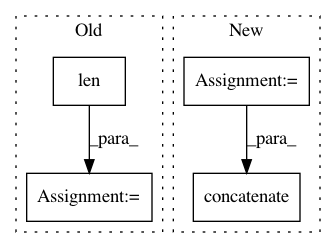

77b1d527138ea2385284ed8eae8322c589065d3f,texar/agents/seq_pg_agent.py,SeqPGAgent,_train_policy,#SeqPGAgent#Any#,108
Before Change
discount_factor = self._hparams.discount_factor
qvalues = list(self._rewards)
for i in range(len(qvalues) - 2, -1, -1):
qvalues[i] += discount_factor * qvalues[i + 1]
q_mean = np.mean(qvalues)
q_std = np.std(qvalues)
qvalues = [(q - q_mean) / q_std for q in qvalues]
After Change
qvalues = np.expand_dims(qvalues, -1)
max_seq_length = self._samples_py.shape[1]
if max_seq_length > 1:
prefix = np.zeros(
[qvalues.shape[0], max_seq_length-1], dtype=qvalues.dtype)
qvalues = np.concatenate([prefix, qvalues])
for i in range(max_seq_length - 2, -1, -1):
qvalues[:, i] += discount_factor * qvalues[:, i + 1]
q_mean = np.mean(qvalues)
In pattern: SUPERPATTERN
Frequency: 3
Non-data size: 4
Instances
Project Name: asyml/texar
Commit Name: 77b1d527138ea2385284ed8eae8322c589065d3f
Time: 2018-04-26
Author: zhitinghu@gmail.com
File Name: texar/agents/seq_pg_agent.py
Class Name: SeqPGAgent
Method Name: _train_policy
Project Name: NifTK/NiftyNet
Commit Name: 5af1994def9a52fe1ffd2847b2519f1e27cfbc64
Time: 2017-08-12
Author: wenqi.li@ucl.ac.uk
File Name: niftynet/io/misc_io.py
Class Name:
Method Name: do_resampling
Project Name: ray-project/ray
Commit Name: 8870270164e8e58f37fde60a535ce9bdbfc1cc90
Time: 2020-05-22
Author: sven@anyscale.io
File Name: rllib/agents/qmix/qmix_policy.py
Class Name: QMixTorchPolicy
Method Name: _unpack_observation